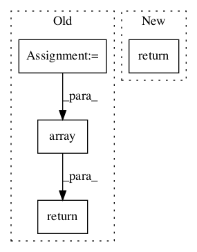

bcf6d0a188ee9ba868c1de01c347f813e3aaa35c,stellargraph/mapper/full_batch_generators.py,FullBatchNodeGenerator,flow,#FullBatchNodeGenerator#Any#Any#,202

Before Change
raise TypeError("Targets must be the same length as node_ids")
// Dictionary to store node indices for quicker node index lookups
node_lookup = dict(zip(self.node_list, range(len(self.node_list))))
// The list of indices of the target nodes in self.node_list
node_indices = np.array([node_lookup[n] for n in node_ids], dtype="int32")
if self.use_sparse:
return SparseFullBatchNodeSequence(
self.features, self.Aadj, targets, node_indices
)
else:
return FullBatchNodeSequence(
self.features, self.Aadj, targets, node_indices
)
After Change
and :meth:`predict_generator`
return super().flow(node_ids, targets)
class FullBatchLinkGenerator(FullBatchGenerator):
In pattern: SUPERPATTERN
Frequency: 3
Non-data size: 4
Instances
Project Name: stellargraph/stellargraph
Commit Name: bcf6d0a188ee9ba868c1de01c347f813e3aaa35c
Time:
Author: null
File Name: stellargraph/mapper/full_batch_generators.py
Class Name: FullBatchNodeGenerator
Method Name: flow
Project Name: openai/baselines
Commit Name: b71152eea0470ac2629c33e0fc66a54fe494949f
Time:
Author: null
File Name: baselines/common/vec_env/dummy_vec_env.py
Class Name: DummyVecEnv
Method Name: step_wait
Project Name: openai/baselines
Commit Name: b71152eea0470ac2629c33e0fc66a54fe494949f
Time:
Author: null
File Name: baselines/common/vec_env/dummy_vec_env.py
Class Name: DummyVecEnv
Method Name: reset